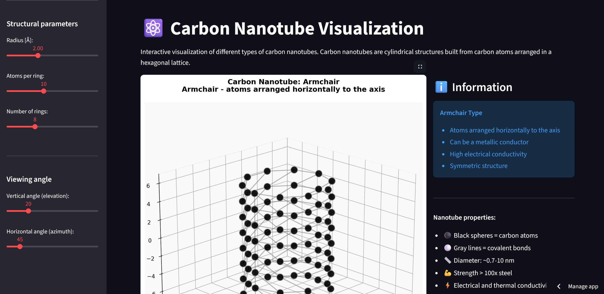

⚛️ Interactive Carbon Nanotube (CNT) Visualization Tool
🚀 Live Demo: nanotubes.streamlit.app

🎯 Project Goal
To create an interactive, physics-based application for the 3D modeling and visualization of Single-Walled Carbon Nanotubes (SWCNTs). The tool allows users to explore the geometry and key properties of different CNT types, including those defined by the Chiral Vector (n,m).
🛠️ Key Technologies and Libraries
| Category | Tool / Library | Role in the Project |
|---|---|---|
| Scientific Computing | NumPy | Core mathematical operations, vector calculations, and array manipulation for atom coordinates. |
| Molecular Modeling | Python (Custom Functions) | Implementation of the Chiral Vector Theory to calculate precise atomic coordinates, bond topology, radius, and chiral angle. |
| Visualization | Matplotlib (3D) | Rendering the atomic structure in 3D, controlling viewing angles, and applying complex color mapping. |
| Web Application | Streamlit | Creating a live, interactive, and customizable web interface with immediate visual feedback. |
⚙️ Core Technical Features
1. Physics-Based Geometry Generation (create_carbon_nanotube)
The application models CNTs using two primary methods, demonstrating a strong grasp of computational chemistry/physics:
- Chiral Vector $(n,m)$ Calculation: The code dynamically calculates the precise geometric parameters (radius, circumference, chiral angle, and atoms per ring) based on the input indices $(n,m)$. This is essential for accurately modeling Armchair ($n=m$), Zigzag ($m=0$), and Chiral ($n \neq m, m \neq 0$) nanotubes.
- Formula: It computes the CNT Diameter $D$ using the formula derived from the Chiral Vector $\vec{C}$: $$D = \frac{a \cdot |\vec{C}|}{\pi} = \frac{\sqrt{3} \cdot a_{\text{cc}} \cdot \sqrt{n^2 + m^2 + nm}}{\pi}$$
- Bond Topology: The code correctly identifies and plots both intramolecular (within-ring) and intermolecular (between-ring) covalent bonds to ensure a topologically correct hexagonal lattice structure.
2. Properties Analysis and Color Mapping (calculate_atom_properties)
The tool analyzes the generated structure to compute properties that can be visualized as color maps, simulating computational analysis results:
- Coordination Number: Calculates the number of bonds for each atom, useful for identifying edge effects (atoms with only 2 neighbors) vs. bulk atoms (3 neighbors).
- Average Bond Distance: Computes the average distance to neighbors, which can visually represent local strain or structural distortions.
- Simulated Charge: Applies a simplified model of charge distribution along the length (z-axis) to simulate edge-induced electronic effects.
3. Interactive Visualization and Styling
The Streamlit interface provides robust interactive controls:
- Customizable Rendering: Users can switch between standard molecular representations: Ball-and-Stick, Wireframe, Space Filling, and Stick.
- Dynamic Properties: The side panel automatically calculates and displays the Type of Conductivity (Metallic vs. Semiconducting) based on the $(n-m) \bmod 3$ rule, a fundamental property derived directly from the quantum structure.
- Export Functionality: Includes robust export options to save the generated high-resolution 3D models as PNG, SVG, and PDF files, suitable for reports and publications.
✅ Skills Demonstrated in This Project
- Computational Physics: Application of materials science principles (chiral vector theory, lattice constants) in code.
- 3D Modeling & Geometry: Generating and manipulating coordinates in 3D space, handling periodic boundary conditions (rings).
- Interactive Development: Full-stack development using Streamlit to deploy complex scientific models as user-friendly web applications.
- Data Visualization: Advanced use of Matplotlib to create informative and visually appealing 3D plots with color mapping for data properties.